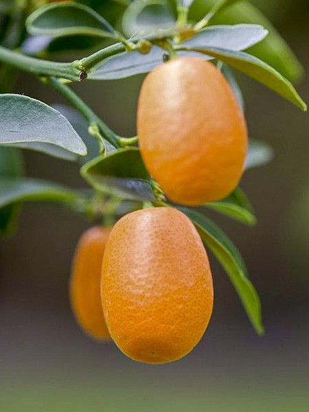

K
Kumquat
Le Kumquat est le plus petit des agrumes. Originaire de la chine, son nom signifie en cantonnais "Orange d’Or". Aujourd’hui, le Kumquat est cultivé et pousse aussi bien en Afrique, en Asie, en Amérique qu’aux Antilles. Comme les agrumes, le Kumquat est riche en vitamine C, carotène et flavonoïdes.
